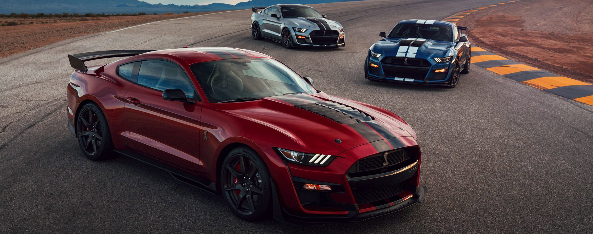
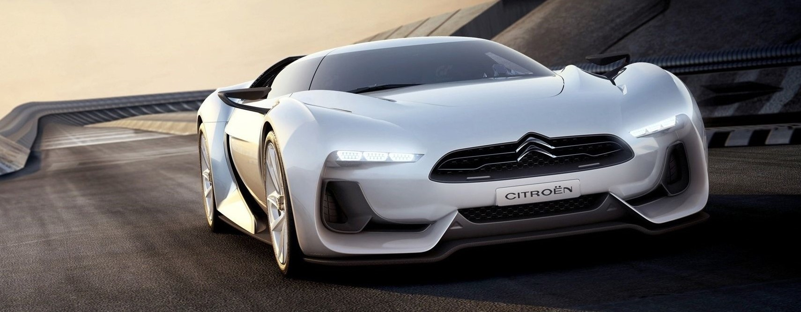

GT by Citroen
Чаще всего в автосимуляторах используются реальные модели автомобилей — знаменитые суперкары или внедорожники, присутствие которых привлекает геймеров.
Но не в этом случае. Автомобиль GT был заказан у компании Citroën специально для игры Gran Turismo 5 Prologue. И «ситоеновцы» его сделали.
Реальный экземпляр имел двигатель Ford Modular V8 мощностью 646 л.с. и весил 1400 кг. По сути, Ямамото благодаря близкому знакомству с Ямаути и Плуэ сумел «продавить» проект автомобиля своей мечты и в игру, и в реальность.
GT by Citroën был представлен на Парижском автосалоне 2008 года. Автомобиль был замечен, и компания получила ряд заказов на машину.В 2009-м было объявлено, что Citroën всё-таки изготовит 6 эксклюзивных суперкаров на продажу — по цене $2100000. Но ещё годом позже эти планы были отменены.
В итоге GT так и остался в единственном экземпляре для автосалона. В виртуальном же мире он появлялся, начиная, с 2008-го во всех версиях Gran Turismo,
а в 2016-м был добавлен в обновления другого симулятора, Asphalt 8: Airborne, то есть лицензию продали разработчику Gameloft.